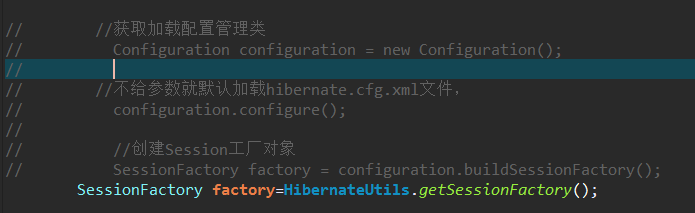

onfiguration configuration = new Configuration();
configuration.configure();到src下面找到名称hibernate.cfg.xml配置文件，创建对象，把配置文件放到对象里面(加载核心配置文件)
根据核心配置文件中，有数据库部分，有映射文件部分，到数据库里面根据映射关系把表创建(需要此代码)
<property name="hibernate.hbm2ddl.auto">create</property>(1)编写工具类，使用静态代码实现：静态代码块在类加载时候执行，只执行一次
package com.sve.Test;
import org.hibernate.SessionFactory;
import org.hibernate.cfg.Configuration;
public class HibernateUtils {
static Configuration fig =null;
static SessionFactory factory =null;
// 静态代码块实现
static{
// 加载核心配置文件
fig=new Configuration();
fig.configure();
factory=fig.buildSessionFactory();
}
// 提供方法返回SessionFactory
public static SessionFactory getSessionFactory(){
return factory;
}
}修改test.java

SessionFactory factory=HibernateUtils.getSessionFactory();运行
1）添加save方法
2）修改update方法
3）删除delete方法
4）根据 id 查询get方法
Transaction transaction = session.getTransaction();//提交事务
transaction.commit();
//回滚事务
transaction.rollback();1）事务4个特性：原子性，一致性，隔离性，持久性